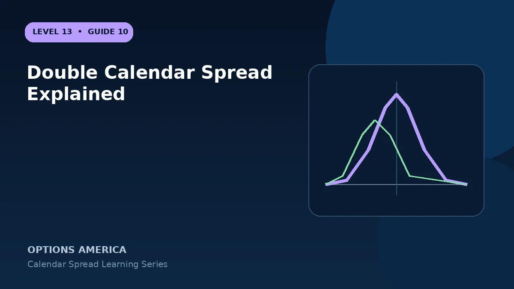

Learn how a double calendar uses two target strikes and two expirations to create a wider time-spread structure.
Four option pairs
Sell a near-term option and buy a later option at a lower strike, then repeat at an upper strike. Calls, puts or a combination can be used depending on platform and pricing.
Why use two targets
Two calendar peaks can create a broader modeled profitable region than one calendar. The space between peaks depends on strikes, expiration gap, IV and time.
Risk and pricing
The total debit is usually the initial risk budget, but assignment or unpaired legs can alter exposure. Eight contracts per unit make commissions and combined bid-ask width important.
Management
Each side can react differently as price moves and skew changes. Closing or rolling one calendar leaves a separate directional time spread, so analyze the remaining position on its own.
A practical example
With stock at $100, combine a 95 put calendar and a 105 call calendar using 30-day shorts and 60-day longs to create two front-expiration targets.
This simplified example uses selected price, time and volatility assumptions; live results will differ. Live option prices also reflect the underlying price, time decay, rates, dividends, liquidity and transaction costs. Greeks are theoretical estimates, not guarantees.
Frequently asked questions
Is a double calendar an iron condor?
No. It uses different expirations and retains back-month options.
Does it guarantee a wider profit zone?
No. The modeled valley between peaks can still be unprofitable.
Why are costs important?
The structure uses many contracts.
Continue the Calendar Spreads cluster
Explore related guides: Calendar Spread Greeks: Delta, Gamma, Theta and Vega · When to Close a Calendar Spread · Calendar Spread Example With Price and Volatility Scenarios. For a structured sequence, use the free Level 13 – Calendar Spreads course.
Options involve risk and are not suitable for every investor. This material is educational and is not investment, tax or legal advice. Greeks are theoretical estimates, and contract terms and broker requirements can vary.